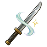
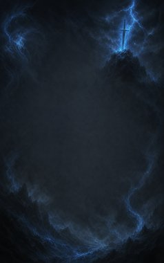
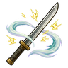
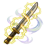
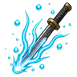
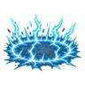
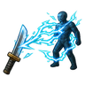
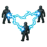

Fūraimaru basics D
D-rank passive. The first lessons of the wind-thunder sword.

Technique trees › Universal ninjutsu
7 techniques · Taijutsu tab
Open to every ninja. How high a ninja can go depends on their ninja build.

D-rank passive. The first lessons of the wind-thunder sword.

B-rank passive. Lightning answers the sword.

S-rank passive. Mastery of wind and thunder.

C-rank. Charge the sword with lightning for a fight: faster and truer. (Needs Fūraimaru in hand.)
| Rank | Chakra | Cooldown | Class level |
|---|---|---|---|
| C | 20 | 15 s | 5 |

S-rank. S-rank. A ring of lightning bursts along the ground around you and stuns everyone it reaches. (Needs Fūraimaru in hand.)
| Rank | Chakra | Cooldown | Class level |
|---|---|---|---|
| S | 90 | 200 s | 18 |

S-rank. S-rank. Turn one enemy's own current back into them: a huge shock that leaves them stunned. (Needs Fūraimaru in hand.)
| Rank | Chakra | Cooldown | Class level |
|---|---|---|---|
| S | 90 | 200 s | 18 |

S-rank. S-rank. Lightning jumps through everyone in a long line. (Needs Fūraimaru in hand.)
| Rank | Chakra | Cooldown | Class level |
|---|---|---|---|
| S | 90 | 200 s | 18 |